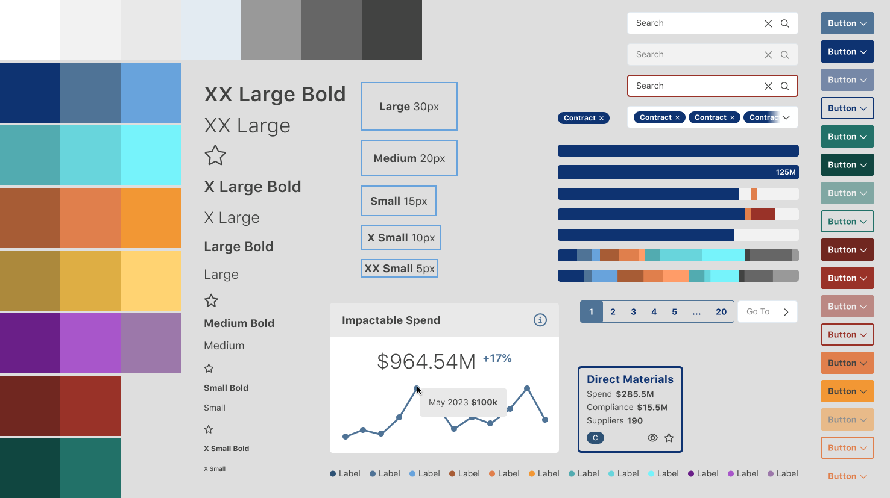
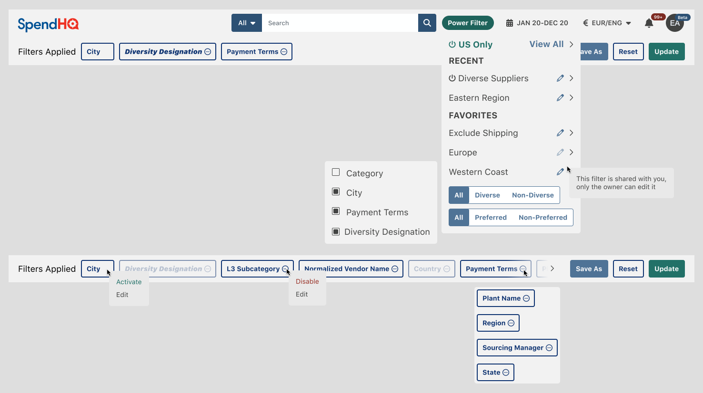
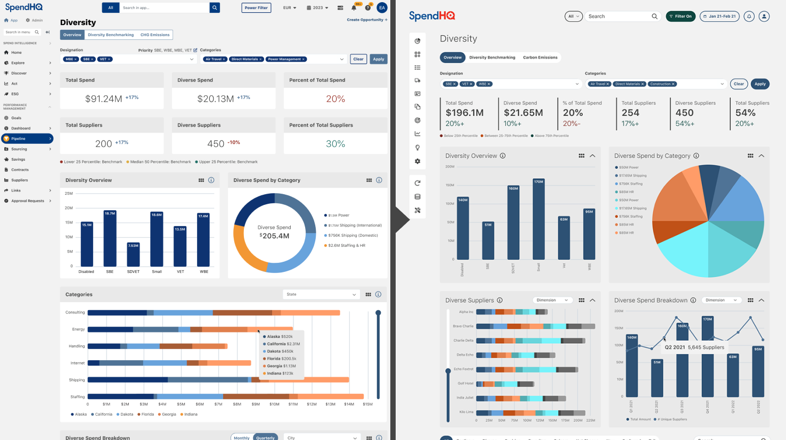

SpendHQ
SpendHQ is an AI-powered spend intelligence platform designed to help Fortune 500 companies including Pepsi and Under Armour optimize their spending by integrating supplier and third-party data. Before my involvement, the platform suffered from a dated and inconsistent user experience that frustrated users and limited engagement.
I led a complete UX/UI transformation, implementing scalable systems, redesigning workflows, and delivering a user-focused, modern interface.
~30% Return on Investment
- Increased Net Promoter Score (NPS) by 133%
- Boosted product stickiness by 125%
- Extended average session times by 50%
- Redesigned over 200 screens
Challenges
SpendHQ faced several challenges when I joined the team. The platform's design was outdated and fragmented, leading to cognitive overload and inefficiencies for users. The organization lacked user feedback documentation, analytics tools, and research artifacts, making it difficult to identify and address user pain points effectively.
The user base was diverse, ranging from financial analysts to C-suite executives, each requiring tailored solutions to meet their unique needs. Additionally, the absence of established design systems or workflows created inefficiencies in collaboration and development.
 Compliance Mock-up
Compliance Mock-up
My Approach
To address these challenges, I established a data-driven foundation by implementing tools like Pendo and Hotjar to track user behavior, including NPS scores, retention rates, and heatmaps. These analytics were complemented by competitive research, user interviews, and testing, providing a comprehensive understanding of user needs. I collaborated with the head of product to develop four key user personas, representing users from technical analysts to executives, and mapped detailed user flows using FigJam to align workflows with business objectives.
Building a scalable design system was a critical component of the redesign. I created a comprehensive Figma ecosystem, incorporating atomic design principles to develop reusable components and centralized design files. This system supported both the current app and the redesigned interface, streamlining collaboration and iteration. To foster collaboration across teams, I facilitated workshops with stakeholders, product owners, and developers, aligning priorities and accelerating the iterative design process.
 Assets from design systemSolutions
One of the most impactful solutions was the redesign of the "Power Filter," a global filtering tool used to refine data across all screens. I transformed this feature into an accessible, modular header component, replacing the overly complex and disjointed workflow. This redesign was validated through hi-fi prototypes and user testing, resulting in significantly faster task completion rates and higher satisfaction.
I also delivered a cohesive reskin and UX optimization, standardizing UI components across over 100 screens to reduce cognitive overload and ensure consistency. To address user confusion, I designed and integrated a comprehensive help system, including contextual pop-overs and dedicated documentation sections, which improved onboarding and reduced support inquiries. Additionally, I developed interactive prototypes to gather actionable feedback and avoid unnecessary development time, saving hundreds of hours across the project.
Power Filter controls easily accessible from global header componentKey Takeaways
Leading SpendHQ’s transformation involved establishing scalable design processes, leveraging data-driven insights, and fostering cross-functional collaboration. By prioritizing user needs and aligning them with business goals, I delivered a modern, intuitive platform that significantly improved engagement, satisfaction, and scalability. The project not only enhanced the experience for SpendHQ’s users but also set a strong foundation for ongoing development and innovation.
Diversity Mock-up